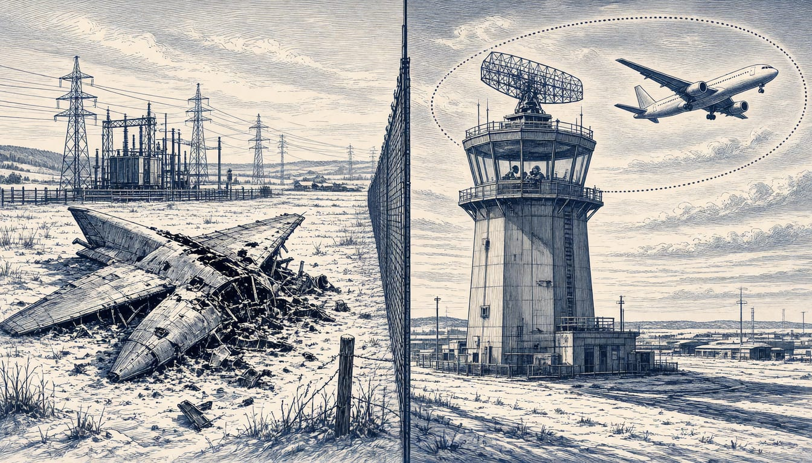

Moldova protests to Moscow over drones entering its airspace
The Foreign Ministry handed the Russian ambassador a note after 14 overflights this month, and demanded an end to the violations. The ambassador rejected the accusation and proposed a joint commission instead.

Moldova has formally accused Russia of violating its airspace with drones. The Foreign Ministry handed Russia's ambassador to Moldova, Oleg Ozerov, a protest note on 18 November over repeated violations of Moldovan airspace during Russian attacks on Ukraine. Ozerov rejected the accusation, saying no evidence of the drones' origin, including serial numbers or flight trajectory, had ever been presented.
Moldova's Foreign Ministry announced on 23 October that a Russian Embassy employee in Chișinău would be declared persona non grata, in response to airspace violations and an explosive-laden drone that fell about 100 metres from a home and an energy installation in Chiștelnița, Telenești district. Since the start of November, Moldova has recorded 14 unauthorised overflights of its airspace.
The immediate cause was the 17 November airspace violation. Seven drones entered Moldovan airspace between 15:45 and 18:10 that day, during a massed Russian attack on Ukraine. Moldova temporarily closed its airspace at 16:27 after drones assessed with very high probability as military were detected there. The closure lasted half an hour. Interfax reported that six border crossing points on the Ukraine border were suspended for security reasons because of the violation.
A Fly One aircraft on the Sharm el-Sheikh to Chișinău route was vectored to a holding area near the Moldovan-Romanian border for about 30 minutes at an altitude above 3,000 metres. The Moldovan civil aviation authority considered the altitude safe, as the drones flew at up to 1,000 metres. Through the note, Moldova demanded that Russia cease these actions and respect Moldovan airspace and borders. The Foreign Ministry condemned the overflights as violations of Moldova's sovereignty that threaten people's lives and safety.
Ozerov said Russia had proposed a joint commission to establish how the drones reached Moldova, whether by Russian action, electronic warfare or Ukrainian provocation. He pointed to incidents in Finland and Poland, saying investigations there found the drones were of Ukrainian origin. The ambassador claimed many false-flag operations aim to heat up relations between Moldova and Russia.